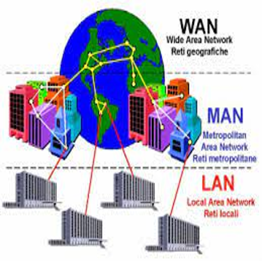

Tipos de redes informáticasComúnmente, las redes informáticas se clasifican según su tamaño en: Redes LAN. "Siglas de Local Área Network" (en inglés: “Red de Área Local”), se trata de las redes de menor tamaño, como las que existen en un locutorio o cyber café, o un departamento. Redes MAN. "Siglas de Metropolitan Área Network" (en inglés: “Red de Área Metropolitana”) designa redes de tamaño intermedio, como las empleadas en los campus universitarios o en grandes bibliotecas o empresas, que conectan distintas áreas alejadas entre sí. Redes WAN. "Siglas de Wide Área Network" (en inglés: “Red de Área Amplia”), alude a las redes de mayor envergadura y alcance, como lo es la red global de redes, Internet.
|
 |
|---|---|
También suelen clasificarse según la tecnología con que estén conectados los computadores, de la siguiente manera: Redes de medios guiados: Aquellas que entrelazan los computadores mediante algún sistema físico de cables, como el par trenzado, el cable coaxial o la fibra óptica. Redes de medios no guiados: Conectan sus computadores a través de medios dispersos y de alcance de área, como las ondas de radio, el infrarrojo o las microondas. Existen otras posibles clasificaciones de red, atendiendo a su topología, su relación funcional o direccionalidad de los datos. |